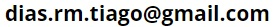

About me
First and foremost, I am a proud father and husband.
What I enjoy the most is cultivating my mind and developing new capabilities. This means reading books, speaking to other people or simply getting better at my job.
My main goal is to share notes on important things that I have learned over time. In the process, I hope not only to refine my skills further, but also to use them as a medium to start interesting conversations.
My work experience
Engineering will always be my core, however serendipity meant I ended up working in Finance. Over the last 15 years, I had an international career in Europe and USA.
- 8 years corporate finance: executed 33 M&A transasactions and raised €57bn capital.
- 4 years+ treasury: managed a €50bn capital structure and cashflows in 5+ currencies.
- 4 years startups: responsible for anything relating to finance.
My key skills include partnering with founders to sustainably grow a business (strategic finance & capital raising) and to build high performing finance teams to deliver day to day finance.
My journey was always driven by what I am passionate for. The next step is to use my skills to solve important problems to society and others.
If you require support or have any questions my contact is:
